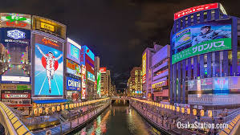
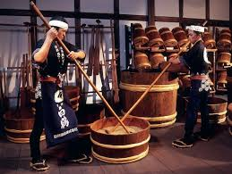
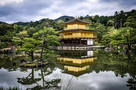
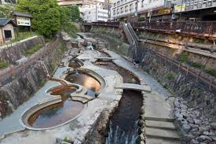
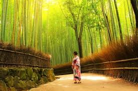

 Dotonbori is the commercial center of Osaka. Lively and filled with places to explore 24/7, Dotonbori is a tourist haven with strong footholds in both modern and traditional Japanese culture. A canal runs through the center of the avenue creating a very unique urban structure you’ll be hard pressed to find elsewhere.
 Nada is Japan's premiere sake district due to the availability of high quality rice, fair weather conditions, and suitable water. Many of Japan’s top sake breweries operate within the district and offer free samples, and some even have fully fledged museums for you explore.
 The Kinkakuji was formerly the retirement villa for shogun Ashikaga Yoshimitsu from 1367 to 1394. The Kinkakuji gets its name from the top two floors that are covered in gold leaf with kin meaning gold in Japanese. The Kinkakuji has been burnt down multiple times with the most recent being 1955.
 Arima is a famous town within Kobe and a popular weekend getaway trip for those looking to unwind and relax. The Hot Springs of Arima boast two types of water the Kinsen “gold water” which contains iron deposits which is known to be good for the skin. The other, the Ginsen “silver water” which contains radium and carbonate is known to be good for muscle aches. Those who are looking to relieve some stress can either stop by for a day-trip or reserve a stay at a ryokan to access these wonderful hot springs.
 Arashiyama is a popular tourist district in Western Kyoto, which is famous for its cherry blossoms that bloom during early April and late November. In addition to the beautiful cherry blossoms, Arashiyama also has the Togetsukyo bridge a central landmark to the area.